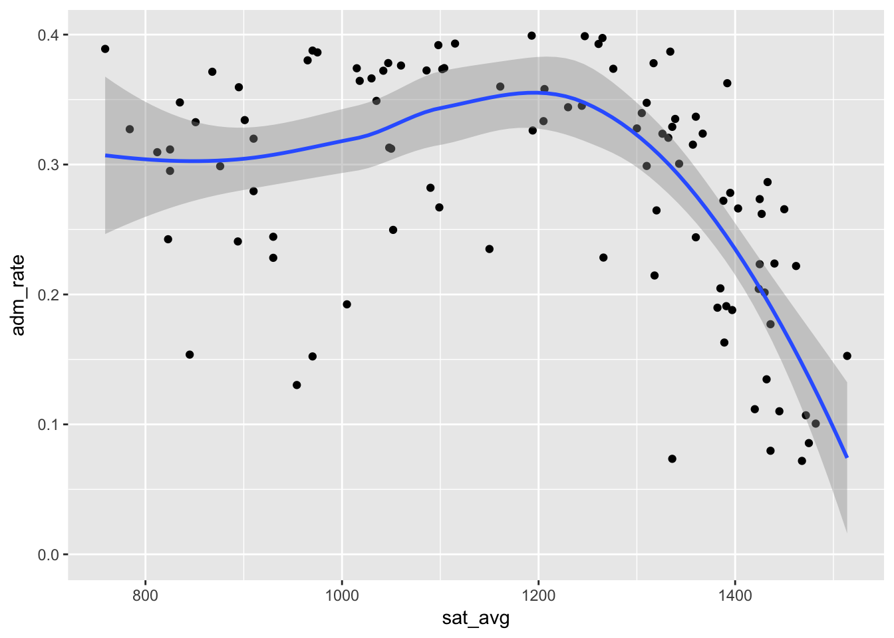
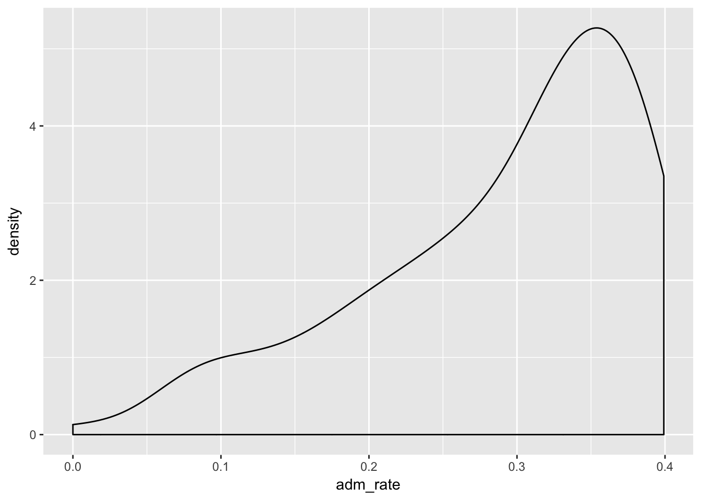

2 Welcome to Data Science!
Today, we’ll be working on getting you set up with the tools you will need for this class. Once you are set up, we’ll do what we’re here to do: analyze data!
Here’s what we need to get done today:
- Introductions
- Installing R
- Installing Rstudio
- Installing git
- Getting set up on GitHub
- Initializing everyone’s github repos
- hello_world.Rmd
2.1 Introductions
2.2 Installing R
R is going to be the only programming language we will use. R is an extensible statistical programming environment that can handle all of the main tasks that we’ll need to cover this semester: getting data, analyzing data and communicating data analysis.
If you haven’t already, you need to download R here: https://cran.r-project.org/.
2.3 Installing Rstudio
When we work with R, we communicate via the command line. To help automate this process, we can write scripts, which contain all of the commands to be executed. These scripts generate various kinds of output, like numbers on the screen, graphics or reports in common formats (pdf, word). Most programming languages have several _I_ntegrated _D_evelopment _E_nvironments (IDEs) that encompass all of these elements (scripts, command line interface, output). The primary IDE for R is Rstudio.
If you haven’t already, you need to download Rstudio here: https://www.rstudio.com/products/rstudio/download2/. You need the free Rstudio desktop version.
2.4 Installing git
git is a version control program. A standard problem in programming is how to track the changes that have been made to a project. These challenges are well-known to anyone who has had to work on a complex document, particularly with collaborators. Because these problems are particularly severe in programming, they developed a set of tools called version control. These will keep track of every change you make to a file, and record why you made the change.
If you haven’t already, you need to download git here.
Once you download and install git, you need to introduce yourself to git. Open up a terminal (type in “terminal” in spotlight search in Mac OS X, hit Windows-R and then type in “cmd” in windows) and enter the following two commands:
git config --global user.name "YOUR FULL NAME"
git config --global user.email "YOUR EMAIL ADDRESS"Make sure the email address is the same one you use to sign up for GitHub below.
If you’re having trouble installing git, there are a couple of other options.
If you’re on a Mac, you can install XCode. Git comes bundled with this, and should install cleanly. N.B.: this is a BIG file and install
Install Github Desktop, available here:https://desktop.github.com/.
With either, make sure you register your username and email.
Again on a Mac, if you’re having issues with the git path, you may need to do a couple of things. First, go to the terminal and type in
which gitThis will give you the path to your git executable.
Then, in Rstudio, click “browse” to get to the executable. To be able to find all hidden files, click COMMAND+SHIFT+Period. If it’s located somewhere like /user/local/git/bin/git you’ll need to do something like this.
You may also want to change the Path, by typing in the following at the terminal:
export PATH="$PATH:<path_to_git>""N.B. in this class, and generally in programming, when you see <text> that means that you need to substitute something in.
2.5 Getting set up on GitHub
GitHub is online hosting service that is widely used by programmers. It allows you to easily share your work with the world. It is integrated with git, so version control is easy to do.
2.6 Initializing repos
Everyone in the class will need a repository (repo from now on) on our GitHub organization. All I need from you is your username on GitHub, then I can add your repo to our organization.
To integrate Rstudio with GitHub, you need to enable git as your version control within Rstudio.
Instructions are here.
2.7 Cloning down your repo
First in RStudio, you’ll need to generate an SSH key. This will let GitHub know it’s safe to talk to your computer. In RStudio, go to Preferences–> Git/SVN, then click on “Create RSA Key”. Once that’s done, you can click on the blue text that says “View public key.” Copy all of the text in the public key.
Now go to GitHub and in the upper right hand corner by your avatar, click on Settings. Go to SSH and GPG keys. Click “New SSH Key” and paste in the text you copied from Rstudio. Name the key, and you should be all set.
From RStudio, you’ll need to click New Project–>Version Control–>GitHub–>Then find your repo, which will be here https://github.com/hoddatascifall16/student_<yourlastname>
Name the project “central”. Choose a good spot on your computer for the project files– wherever you usually keep class directories. This project will be the only place you need to work for this class the entire semester.
Once you click “create project” all of the files should download and you should have your own version of all of the class files downloaded on your computer.
N.B. in this class, and generally in programming, when you see <text> that means that you need to substitute something in.
2.8 Yes We Code! Running R Code
The following code chunk will be our first use of R in this class. We’re going to grab some data that’s part of the college scorecard and do a bit of analysis on it.
When we say that R is extensible, we mean that people in the community can write programs that everyone else can use. These are called “packages.” In these first few lines of code, I load two packages using the library command in R. The two packages, dplyr and ggplot2 were written by Hadley Wickham and play a key role in his book.
## Clear environment
rm(list=ls())
## Get necessary libraries-- won't work the first time, because you need to install them!
library(tidyverse)Now we’re ready to load in data. The data frame will be our basic way of interacting with everything in this class. The sc data frame contains information from the college scorecard on 127 different colleges and univeristies.
## Load in the data
load("college.Rdata")Here are the variables in the college.Rdata dataset:
Variable Name :Definition unitid: Unit ID
instnm: Institution Name
stabbr: State Abbreviation
year: Year
control: control of institution, 1=public, 2= private non-profit, 3=private for-profit
preddeg: predominant degree, 1= certificate, 2= associates, 3= bachelor’s, 4=graduate
adm_rate: Proportion of Applicants Admitted
sat_avg: Midpoint of entrance exam scores, on SAT scale, math and verbal only
costt_4a: Average cost of attendance (tuition and room and board less all grant aid)
debt_mdn: Median debt of graduates
md_earn_ne_pg: Earnings of graduates who are not enrolled in higher education, six years after graduation
Looking at datasets
We can look at the first few rows and columns of sc by typing in the data name.
We can look at the whole dataset using View.
## What does this data look like? Look at the first few rows, first few variables
sc## # A tibble: 127 × 9
## unitid instnm stabbr year
## <int> <chr> <chr> <dbl>
## 1 446048 Ave Maria University FL 2009
## 2 443410 DigiPen Institute of Technology WA 2009
## 3 441186 San Diego State University-Imperial Valley Campus CA 2009
## 4 404338 Schiller International University FL 2009
## 5 169442 College for Creative Studies MI 2009
## 6 168342 Williams College MA 2009
## 7 167057 The New England Conservatory of Music MA 2009
## 8 166027 Harvard University MA 2009
## 9 166683 Massachusetts Institute of Technology MA 2009
## 10 168148 Tufts University MA 2009
## # ... with 117 more rows, and 5 more variables: adm_rate <dbl>,
## # sat_avg <dbl>, costt4_a <int>, debt_mdn <dbl>, md_earn_wne_p6 <int>#View(sc)Filter, Select, Arrange
In exploring data, many times we want to look at smaller parts of the dataset. There are three commands we’ll use today that help with this.
-filter selects only those cases or rows that meet some logical criteria.
-select selects only those variables or coloumns that meet some criteria
-arrange arranges the rows of a dataset in the way we want.
For more on these, please see this vignette.
Let’s grab just the data for Vanderbilt, then look only at the average test scores and admit rate.
## Where are we?
sc%>%filter(instnm=="Vanderbilt University")## # A tibble: 1 × 9
## unitid instnm stabbr year adm_rate sat_avg costt4_a
## <int> <chr> <chr> <dbl> <dbl> <dbl> <int>
## 1 221999 Vanderbilt University TN 2009 0.2015 1430 52303
## # ... with 2 more variables: debt_mdn <dbl>, md_earn_wne_p6 <int>sc%>%filter(instnm=="Vanderbilt University")%>%select(instnm,adm_rate,sat_avg )## # A tibble: 1 × 3
## instnm adm_rate sat_avg
## <chr> <dbl> <dbl>
## 1 Vanderbilt University 0.2015 1430## Just colleges with low admit rates: show admit rate and sat scores, arrange in a pleasing way
sc%>%filter(adm_rate<.1)%>%select(instnm,adm_rate,sat_avg)%>%arrange(sat_avg,adm_rate)## # A tibble: 6 × 3
## instnm adm_rate sat_avg
## <chr> <dbl> <dbl>
## 1 Cooper Union for the Advancement of Science and Art 0.0735 1336
## 2 Stanford University 0.0797 1436
## 3 Harvard University 0.0719 1468
## 4 Yale University 0.0856 1475
## 5 Dell'Arte International School of Physical Theatre 0.0000 NA
## 6 The Juilliard School 0.0711 NA## Just colleges with low admit rates: order by sat scores (- sat_avg gives descending)
sc%>%filter(adm_rate<.1)%>%select(instnm,adm_rate,sat_avg)%>%arrange(-sat_avg)## # A tibble: 6 × 3
## instnm adm_rate sat_avg
## <chr> <dbl> <dbl>
## 1 Yale University 0.0856 1475
## 2 Harvard University 0.0719 1468
## 3 Stanford University 0.0797 1436
## 4 Cooper Union for the Advancement of Science and Art 0.0735 1336
## 5 The Juilliard School 0.0711 NA
## 6 Dell'Arte International School of Physical Theatre 0.0000 NA## New cut
sc%>%filter(adm_rate>.3)%>%select(instnm,sat_avg,md_earn_wne_p6,stabbr)%>%arrange(stabbr,-sat_avg)%>%print(n=100)## # A tibble: 72 × 4
## instnm sat_avg
## <chr> <dbl>
## 1 Henderson State University 1048
## 2 University of Arkansas at Pine Bluff 784
## 3 University of Advancing Technology NA
## 4 Scripps College 1336
## 5 University of California-San Diego 1247
## 6 Pepperdine University 1230
## 7 California Polytechnic State University-San Luis Obispo 1205
## 8 San Diego State University 1050
## 9 Hope International University 975
## 10 San Diego State University-Imperial Valley Campus 825
## 11 The Art Institute of California-Argosy University San Francisco NA
## 12 Colorado College 1326
## 13 Connecticut College NA
## 14 George Washington University 1276
## 15 Delaware State University 868
## 16 Ave Maria University 1104
## 17 Florida International University 1102
## 18 Brenau University 965
## 19 National Louis University NA
## 20 Grambling State University 851
## 21 Brandeis University 1367
## 22 Boston College 1343
## 23 The New England Conservatory of Music NA
## 24 The Boston Conservatory NA
## 25 College for Creative Studies 970
## 26 Rocky Mountain College 1042
## 27 University of North Carolina at Chapel Hill 1305
## 28 Campbell University 1018
## 29 Shaw University NA
## 30 Wake Forest University NA
## 31 Nebraska Methodist College of Nursing & Allied Health 1030
## 32 New Jersey City University 835
## 33 Colgate University 1357
## 34 University of Rochester 1334
## 35 New York University 1317
## 36 SUNY College at Geneseo 1310
## 37 SUNY at Binghamton 1265
## 38 Stony Brook University 1193
## 39 Marist College 1161
## 40 State University of New York at New Paltz 1115
## 41 SUNY Oneonta 1098
## 42 SUNY Institute of Technology at Utica-Rome 1086
## 43 CUNY Queens College 1060
## 44 CUNY Brooklyn College 1035
## 45 CUNY City College 1015
## 46 CUNY Lehman College 910
## 47 Bard College NA
## 48 St Lawrence University NA
## 49 Manhattan School of Music NA
## 50 Oberlin College 1360
## 51 Ohio Christian University 901
## 52 Central State University 759
## 53 Wilberforce University NA
## 54 Carnegie Mellon University 1392
## 55 Lehigh University 1300
## 56 Lincoln University of Pennsylvania 812
## 57 University of Puerto Rico-Rio Piedras 1206
## 58 Bayamon Central University NA
## 59 Universidad del Sagrado Corazon NA
## 60 Universidad Central Del Caribe NA
## 61 Inter American University of Puerto Rico-Bayamon NA
## 62 Inter American University of Puerto Rico-Arecibo NA
## 63 Inter American University of Puerto Rico-Guayama NA
## 64 Rhode Island School of Design 1244
## 65 Claflin University 895
## 66 Hardin-Simmons University 1047
## 67 South University-The Art Institute of Dallas NA
## 68 Southwestern Assemblies of God University NA
## 69 College of William and Mary 1339
## 70 University of Virginia-Main Campus 1332
## 71 University of Richmond 1261
## 72 DigiPen Institute of Technology 1194
## # ... with 2 more variables: md_earn_wne_p6 <int>, stabbr <chr>Quick Exercise Choose a different college and two different things about that college.
Summarizing Data
## What's the average median debt?
sc%>%summarize(mean_debt=mean(debt_mdn,na.rm=TRUE))## # A tibble: 1 × 1
## mean_debt
## <dbl>
## 1 13428.78Quick Exercise Summarize the average entering SAT scores in this dataset.
sc%>%summarize(mean_sat=mean(sat_avg,na.rm=TRUE))## # A tibble: 1 × 1
## mean_sat
## <dbl>
## 1 1192.89Combining Commands We can also combine commands, so that summaries are done on only a part of the dataset. Below, I summarize mediand debt for selective schools, and not very selective schools.
## What's the average median debt for very selective schools?
sc%>%filter(adm_rate<.1)%>%summarize(mean_debt=mean(debt_mdn,na.rm=TRUE))## # A tibble: 1 × 1
## mean_debt
## <dbl>
## 1 8264.5## And for not very selective schools?
sc%>%filter(adm_rate>.3)%>%summarize(mean_debt=mean(debt_mdn,na.rm=TRUE))## # A tibble: 1 × 1
## mean_debt
## <dbl>
## 1 14120.92Quick Exercise Calcualte average earnings for schools where SAT>1200
sc%>%filter(sat_avg>1200)%>%summarize(mean_earn=mean(md_earn_wne_p6,na.rm=TRUE))## # A tibble: 1 × 1
## mean_earn
## <dbl>
## 1 50220Grouping Data Another powerful tool is being able to calculate characteristics for various groups. For example, what are the average earnings for the three different types of colleges (public, private non-profit, private for-profit) in the dataset?
#
# sc%>%group_by(control)
# %>%
# summarize(mean_earnings=mean(md_earn_wne_p6))
#
# sc%>%group_by(control)%>%
# summarize(mean_debt=mean(debt_mdn))Plotting Data The last basic tool for looking at a dataset is plotting the data.
## Plotting: bivariate
gg<-ggplot(data=sc,aes(x=sat_avg,y=adm_rate))
gg<-gg+geom_point()
gg<-gg+geom_smooth()
gg## `geom_smooth()` using method = 'loess'## Warning: Removed 27 rows containing non-finite values (stat_smooth).## Warning: Removed 27 rows containing missing values (geom_point).
## Univariate descriptives
gg<-ggplot(data=sc,aes(adm_rate))
gg<-gg+geom_density()
gg
Quick exercise Replicate the above plots, but put cost of attendance on the y axis.
2.9 Your first commit: hello_world.Rmd
.Rmd files will be the only file format we work in this class. .Rmd files contain three basic elements:
- Script that can be interpreted by R.
- Output generated by R, including tables and figures.
- Text that can be read by humans.
From a .Rmd file you can generate html documents, pdf documents, word documents, slides . . . lots of stuff. All class notes will be in .Rmd. All assignments will be turned in as .Rmd files, and your final project? You guessed it, .Rmd.
For today, I want you to create a file called hello_world_<lastname>.Rmd in your github repo for assignment 1. It should contain the following elements:
- A sentence that says “Hello, World”
- R output that summarizes one of the variables in the
colllege.Rdatadataset - R output that shows a scatterplot for two of the variables in the
college.Rdatadataset. Lucky for you this is is also your first assignment! Submit it under assignment 1, using the formatassignment1_<lastname>.Rmd. All assignments should be turned in using this format.
Stretch Items
If you have extra time, you can do the following:
- Calculate the average earnings for individuals at the most selective colleges, then compare that with individuals at the least selective colleges in the dataset.
- Find a way to determine whether colleges with very high SAT scores tend to be larger or smaller than colleges with low SAT scores.
- Plot the relationship between cost and debt. What do you see? Does this surprise you?
- Now, provide separate plots for cost and debt by control of the institution.